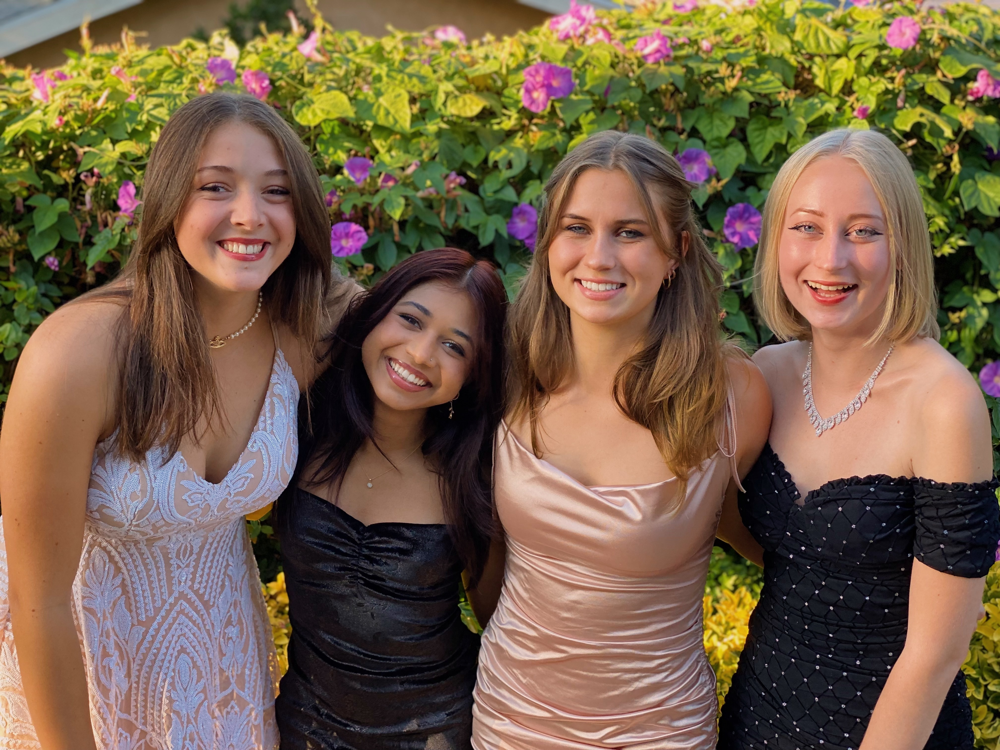
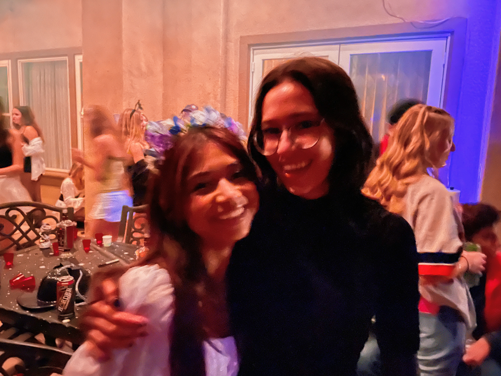
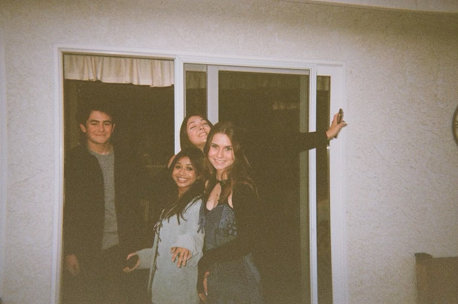
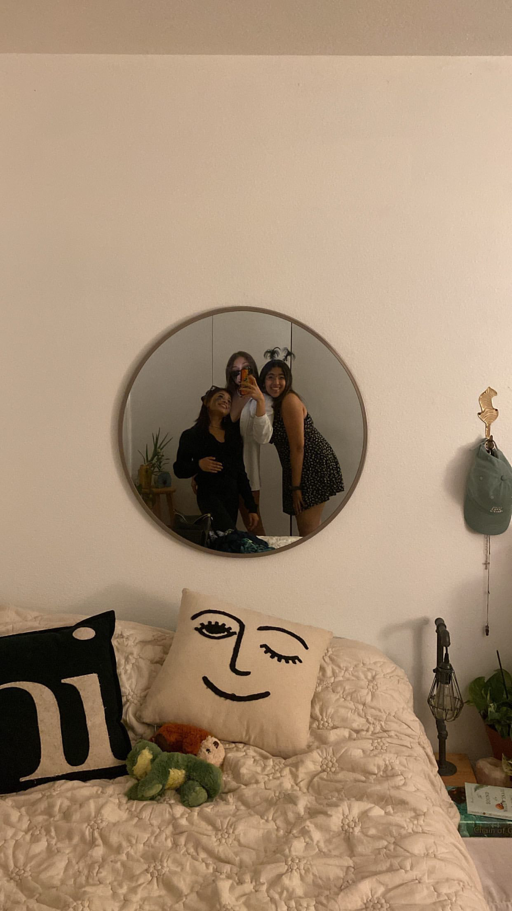
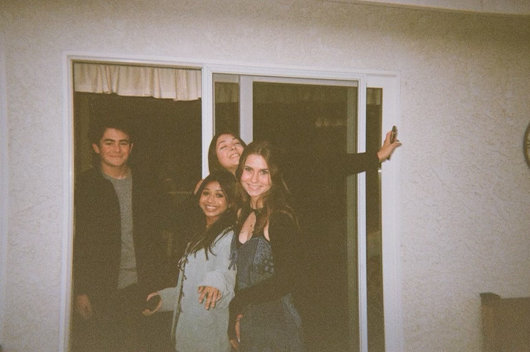
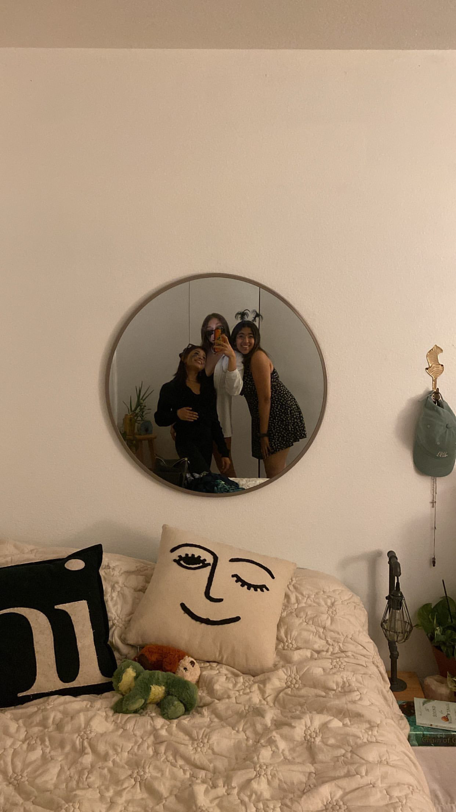

Annika Kanugo
About Me
My name is Annika Kanugo and I am currently a first-year Political Science major at the University of California, Riverside. Ever since I was 7, I have dreamt of pursuing a career in law and politics, and truly making an impact on society as I get older. My deep passion and interest in the field of law and social justice have encouraged me to pursue extracurricular activities and clubs related to my prospective career. I was given the opportunity to volunteer for Nithya Raman’s LA city council member campaign and was able to connect with many people in a field that I want to go into as I get older. I also was part of a student-led coalition, called Justice in the Classroom, where we fight for racial equity in education. In JitC, we organized many conferences, met with county-level school board members, and even piloted an ethnic studies program that will soon be mandatory for all students in my county. For many of these events, I spearheaded committees and tasks that were crucial to the success of the organization and even spoke at a mental health conference myself in front of over 400 educators and board members. The arguably most relevant activity I did was a mock trial. I was an attorney all 4 years of high school and was on the varsity team for 3. Here, I worked together firsthand with real attorneys, some of who worked for the District Attorney, and was able to see the inner workings of the law profession through them. Public speaking is something that has been part of my identity since I was a young child. As a result, almost every extracurricular activity or club I have joined has surrounded this one skill, like speech and debate and mock trial. I developed a stutter this February due to an error in the dosage of a medication that I take. This came at an especially devastating time, as it was two weeks before my last mock trial competition ever. I sat down every day to learn how to talk by watching speech therapy videos on YouTube and saying the same sentence over and over again until I no longer stumbled over the words. Hours and hours of stringing together words and letters just to do something as simple as speaking full-on sentences. Although this was an incredibly stressful and discouraging experience, I was able to persevere and get through it because of my determination and passion for this extracurricular that was so important to me. Going into the future, I am dedicated to showing the same kind of commitment that I showed in high school to all aspects of my life, including my job. I hope to make an impact through law and legislature in order to help those whose voices cannot be heard, and for those who cannot advocate for themselves.
Experience
Director of Advocacy
• Piloted an ethnic studies program, will soon be mandatory for all students in Ventura County
• Organized many conferences with county wide education administrators
• Spearheaded multiple projects and teams of student peers
• Made crucial changes to make school curriculums more diverse
Assistant Manager
• Responsible for checking out customers and helping with their concerns
• Counted registers and safe, and prepared deposit slips
Mock Trial
• Played an attorney role all 4 years of high school, 3 years on varsity
• Worked with peers and team members over lines of quationing and case theory
• Worked with real attorneys, some who worked for the District Attorney of Ventura County
• Competed against other schools across California
Education
University of California Riverside
Portfolio






